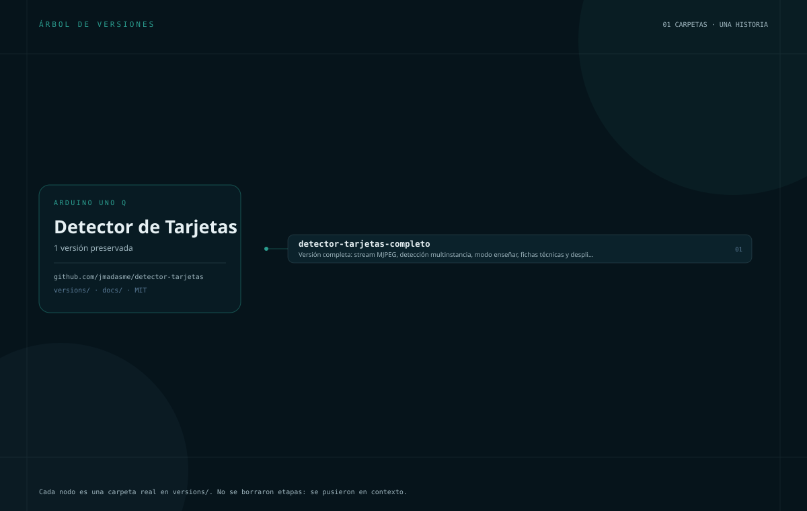
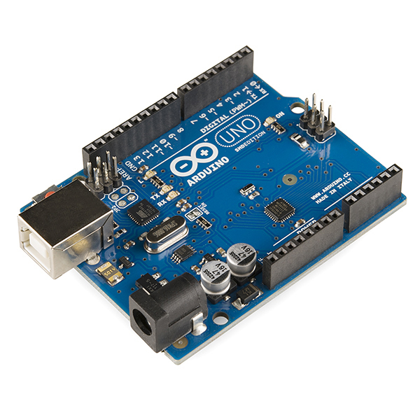

detector-tarjetas-completo
53 archivosVersión completa: stream MJPEG, detección multinstancia, modo enseñar, fichas técnicas y despliegue en la UNO Q.
Ver carpetaDetección de placas por plantillas visuales con ORB y homografía, presentada como una escena de cómic sobre la UNO Q.

Detector de Tarjetas reconoce placas de desarrollo por sus etiquetas, sin redes neuronales ni modelos descargados. La aplicación web captura video MJPEG, extrae puntos ORB de las plantillas que el usuario enseña desde el navegador, aplica el ratio test de Lowe y confirma la geometría con una homografía RANSAC. Cada placa detectada muestra su ficha técnica en globos de cómic y admite varias copias del mismo modelo en el cuadro.
Está orientado a talleres, aulas y demostraciones donde se quiere explicar visión clásica con resultados visibles y sin GPU. El modo enseñar permite agregar etiquetas nuevas en caliente. La versión documentada incluye 41 pruebas y una auditoría sin incidencias, pero el despliegue físico en la UNO Q no se completó porque la placa no era accesible por red ni por ADB; el código y los scripts quedaron listos.
Visión en tiempo real que reconoce placas a partir de etiquetas que el usuario enseña desde el navegador. Sin redes neuronales: ORB, ratio test de Lowe y homografía RANSAC para ubicar varias instancias por cuadro.
Visión en tiempo real que reconoce placas a partir de etiquetas que el usuario enseña desde el navegador. Sin redes neuronales: ORB, ratio test de Lowe y homografía RANSAC para ubicar varias instancias por cuadro.
Los fragmentos son del código real de versions/detector-tarjetas-completo. El proyecto no incluye autenticación y está pensado para una LAN de confianza; el despliegue físico en la UNO Q no está verificado en este recorrido.
Cada carpeta conserva una etapa del proyecto. No se borraron las anteriores: se pusieron en contexto.
Versión completa: stream MJPEG, detección multinstancia, modo enseñar, fichas técnicas y despliegue en la UNO Q.
Ver carpetaQué resuelve y por qué está construido así.
Identificar una placa electrónica a simple vista no es trivial: hay decenas de modelos parecidos y el dato técnico (MCU, RAM, reloj) no está impreso en la placa. Un clasificador con red neuronal pide dataset etiquetado, GPU y nube.
Visión clásica con ORB + homografía: extrae features locales de cada placa, las compara contra plantillas y dibuja una ficha técnica en vivo. 100 % local, sin modelos entrenados, con un modo enseñar para sumar placas nuevas.
El recorrido desde el frame hasta la ficha dibujada.
Recibe frames de una cámara IP (Android «IP Webcam» vía FFMPEG) o de una webcam USB por V4L2. La URL de cámara se cambia en vivo desde la página sin reiniciar el servicio.
Extrae hasta 500 keypoints por frame con ORB: detector y descriptor binario rápido, sin modelos entrenados ni pesos descargados.
Empareja descriptores por distancia de Hamming y aplica el ratio test de Lowe (0.75) para descartar matches ambiguos.
Estima la homografía de cada plantilla y cuenta los inliers (≥20). Es lo que separa una detección real de un falso positivo.
Calcula el score por inliers, suprime duplicados (NMS, IoU 0.30) y solo reporta la placa si supera el umbral de 0.60.
Dibuja sobre el stream MJPEG un globo cómic estabilizado con la ficha técnica (MCU, RAM, reloj) de la placa reconocida.
Una vista de los componentes principales y cómo se conectan.

Android «IP Webcam» vía FFMPEG o webcam USB por V4L2. URL editable en vivo desde la página (POST /api/camera).
stdlib http.server en el puerto 8000: stream MJPEG, API JSON, modo enseñar y estáticos. Sin pip ni frameworks.
ORB → BFMatcher Hamming → ratio test → homografía → NMS → score. Todo en un worker que corre en la UNO Q.
Decisiones que hacen que el proyecto sea útil, mantenible y honesto.
ORB + RANSAC puro: no hay red neuronal, ni GPU, ni nube. Todo corre en el lado Linux de la UNO Q.
/teach genera plantillas ORB (.npz) apuntando la cámara a una placa nueva, sin tocar código ni reiniciar.
Mediana + EMA + zona muerta de 18 px: el globo no parpadea ni salta aunque la detección vibre entre frames.
Cambiá la fuente (IP cam o webcam) desde la página sin reiniciar el servicio. URL validada contra http/https/rtsp.
Servicio detector-tarjetas.service en la UNO Q, con discover_unoq.sh para encontrarla en la LAN y deploy.sh para publicar.
Pytest cubre API, cámara, detector, teach y UI: 41/41 en verde. Lo que no está probado se declara.
Sin «magia»: detección real sobre hardware real y límites claros.
9 placas en boards.json
score 0,90–0,94 con Raspberry Pi 2 real
24 muestras · 41 tests passed
puerto 8000 · stream MJPEG 15 fps
100 % local · sin nube ni GPU
umbral score 0,60 · inliers ≥ 20
Tecnologías y herramientas que sostienen el proyecto.
Arduino UNO Q Debian 13 Python 3 OpenCV NumPy ORB http.server pytest Sin pip ni frameworks web: stdlib + OpenCV + NumPy, instalables con apt en la UNO Q.
bash — detector-tarjetas
# En la UNO Q (o local): dependencias con apt, sin pip $ sudo apt install python3-opencv python3-numpy # Corre local con webcam o cámara IP $ ./scripts/run_local.sh # Despliega a la placa por ssh (puerto 2222) $ ./scripts/deploy.sh
Cada decisión, cada límite y cada comando están documentados en el repositorio. Sin folletos: lo que funciona se muestra, lo que no, también.
Qué es, cómo funciona, instalación y límites.
Requisitos, uso, parámetros y diagnóstico.
Arquitectura, módulos y extensión.
Cómo quedó el proyecto tal como está construido.
systemd, SSH, cámara IP y arranque real.
Registro de decisiones y evolución del proyecto.
Las primeras versiones existen para que estos errores no se repitan: cada una dejó una decisión de diseño verificable.
La UNO Q de destino, en 192.168.1.4, respondía ping y ARP pero no exponía ningún puerto TCP: ni SSH, ni HTTP, ni mDNS. Se documentaron tres caminos de instalación —habilitar SSH desde App Lab, desplegar por ADB o copiar a mano— y el despliegue físico quedó pendiente. El código y los scripts sí están terminados.
Con dos Arduino UNO R3 iguales, el ratio test descartaba la segunda copia porque sus descriptores coincidían con la misma plantilla. Se repite el matching hasta cuatro veces por plantilla, se eliminan los keypoints dentro de la caja ya aceptada con ocho píxeles de margen y se agrupan las detecciones cercanas a 40 px.
RANSAC devolvía homografías degeneradas que producían cajas gigantes o fuera del encuadre. Se añadieron validaciones de proyección finita, caja mayor a un píxel, proporción de relleno mínima del 20 %, recorte al frame, tamaño mínimo de 8×8 y área entre 2 % y 90 %. Es la incidencia P-07 de la bitácora.
Seis criterios con la misma escala en todo el catálogo, para comparar sin marketing.
No en el sentido de redes neuronales: es visión clásica con ORB y homografía, sin entrenamiento pesado.
Arduino UNO R3, Arduino Nano, Raspberry Pi 4 y Raspberry Pi 5 como punto de partida.
Sí, desde /teach: capturás muestras de su etiqueta y quedan disponibles sin reiniciar el detector.
Necesita ver la etiqueta con contraste. Con poca luz baja la cantidad de keypoints y la detección se vuelve intermitente.
No. Está pensado para una LAN de confianza; no lo expongas directo a Internet.
Usá esta familia como base para detector de tarjetas. Está documentada para que puedas entenderla, ejecutarla y continuarla sin adivinar.